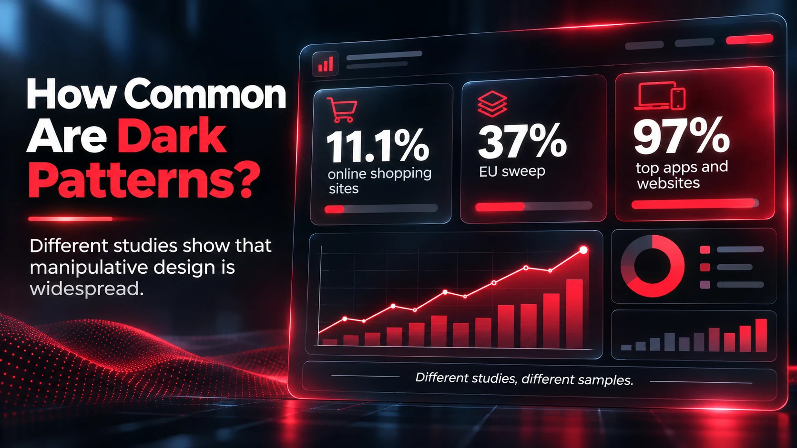

Are deceptive interfaces rare?
Dark patterns are not limited to a few strange websites. Researchers have found them in online stores, mobile applications and other digital services. Measuring their frequency is difficult, because a pattern may appear only after a user creates an account, attempts to cancel or reaches a particular screen. Different studies examine different kinds of behaviour, so their percentages should not be treated as if they measured exactly the same thing.

Princeton: about 11,000 shopping websites
In 2019, researchers including Arunesh Mathur studied approximately 11,000 shopping websites and around 53,000 product pages. They identified 1,818 dark-pattern instances across 1,254 websites, about 11.1% of their sample. They also classified fifteen types of patterns, from hidden costs to false urgency and social proof. [1]
Among their findings, 234 instances on 183 websites showed deceptive behaviour. The study also found third-party companies selling tools that help shops display these patterns. This means some tricks were not simply built by one individual website: they could be added through ready-made services.
The 11.1% result is important, but it is not a claim that only 11.1% of all websites use dark patterns. The researchers used automated methods focusing on shopping and particular product pages. Patterns hidden inside account settings, subscription cancellation and other areas could be missed. Their measurement is therefore best understood as a lower-bound estimate for the behaviours they could detect.
European Commission: 399 online shops
A European consumer-protection screening carried out in 2022 checked 399 online shops. Authorities found that 148 shops, about 37%, displayed at least one of three examined dark-pattern categories: fake countdown timers, false visual hierarchy or hidden information. The European Commission published these results in January 2023. [2]
| Behaviour | Number of shops |
|---|---|
| Fake countdown timers | 42 |
| Misleading visual hierarchy | 54 |
| Hidden important information | 70 |
| At least one of these patterns | 148 of 399 |
The categories could overlap, and the numbers do not describe every possible pattern. For example, 23 of the websites hid information in a way that pushed visitors towards a subscription. Investigators concluded that these practices could potentially breach European consumer law; finding a suspicious pattern in a screening is not automatically the same as a final court decision.
A wider EU study: 97% of popular services
A separate behavioural study for the European Commission examined 75 popular websites and apps used by EU consumers. It reported that 97% used at least one dark pattern. Frequently observed techniques included hidden information, preselection, repeated prompts, difficult cancellation and forced registration. [3]
Why is this result so much higher than Princeton's? The samples and methods are very different. Princeton's automated work looked for particular patterns on shopping product pages. The EU behavioural research examined popular services with a wider view of the experience. It would be misleading to put these numbers on a timeline and announce that dark patterns suddenly increased from 11% to 97%.
What should we learn from these numbers?
Three lessons are useful. First, deceptive design is widespread enough to deserve attention. Second, what researchers measure strongly affects the result. Third, a pattern is not harmless just because it is common. Even a small confusing choice repeated across thousands of transactions can affect many people.
For HCI designers, the goal is to identify risky interactions before they reach users. Research, usability testing and transparent choice design can reduce these problems. The next page looks at companies investigated by regulators and shows what can happen when confusing design affects real customers.
Sources
- Mathur, A. et al. (2019). Dark Patterns at Scale: Findings from a Crawl of 11K Shopping Websites. Princeton project.
- European Commission (2023). 2022 sweep on dark patterns. Official screening results.
- European Commission (2022). Behavioural study on unfair commercial practices in the digital environment. Study overview.